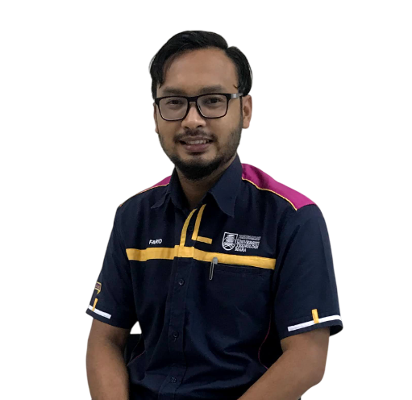

Hello, Welcome to
Ir. Ts. Gs. DrMohamad Farid Bin Misnan
Professional Site

P.Eng (Electronic)
P.Tech (Electrical & Electronic)
P.Geospatialist
PhD (Electrical – Robotic & Automation)

Mohamad Farid bin Misnan received his Bachelor's degree in Electrical Engineering from Universiti Teknologi MARA (UiTM) in July 2009, respectively. In July 2017, he completed his PhD at Universiti Teknologi MARA (UiTM), majoring in Robotic & Automation Electrical Engineering. He has five years of industrial experience, primarily in Robotic & Automation Design. He is currently a Senior Lecturer at Faculty of Electrical Engineering, Universiti Teknologi MARA (UiTM). Since 2015, he has been actively engaged in teaching and learning activities, including accreditation processes involving the Jabatan Pembangunan Kemahiran (JPK), Malaysia Board of Technology (MBoT), and Malaysia Qualification Agency (MQA). His primary research interests encompass advanced automation systems, unmanned vehicles, Internet of Things (IoT) integration, sensory network technology, and hydrogen fuel cell automation controller development. He has published articles in international journals, conference proceedings, policy and technical papers on various topics related to robotic automation, internet of things, engineering work monitoring, artificial intelligent control strategy and hydrogen fuel cell advance controller development. His research currently collaborated with Indonesia, Iraq and India in automation and internet of things engineering applications development. Beside the academic engineering knowledge, He has led several industrial and community projects that have effectively integrated knowledge of advanced automation technology, significantly impacting the broader community and supporting sustainable development goals. His efforts in projects such as the Kebun Komuniti succeeded an high impact achievement of a four-star rating community project for integrating automation in farming applications. Additionally, he has achieved several three-star ratings for community projects promoting Robotic-STEM education, involving primary and secondary school students. Beyond his research and community involvement, He is also deeply engaged in TVET and STEM academic development included programme in Kolej Vokasional Ministry of Education. He plays a crucial role in advancing TVET by developing curricula, participating in educational initiatives, and promoting skills development in technology and engineering. His holistic approach to education and research demonstrates his dedication to fostering innovation and improving societal outcomes. His work contributes to the broader mission of preparing students and professionals for the evolving demands of the technological landscape.
Email: mohamadfarid@uitm.edu.my